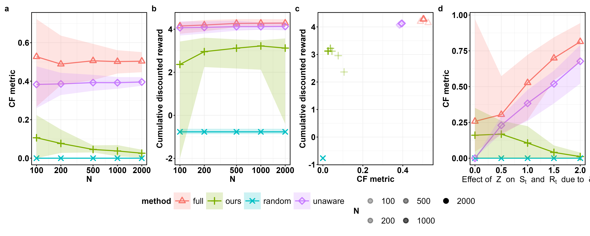

Empirical Results (Synthetic Data)
This section presents an empirical illustration of unfairness reduction resulting
from using SequentialPreprocessor provided in PyCFRL. In particular,
we run experiments using synthetic trajectory data based on the design of synthetic
data experiments in Wang et al. (2025) with
some minor adjustments.
These illustrations are produced using version 0.3.0 of PyCFRL.
Methods Being Compared
We compare the performance of the following methods:
Random: Policy that selects each action randomly with equal probability.
Full: Method that uses all variables, including the sensitive attribute, for policy learning.
Unaware: Method that uses all variables except the sensitive attribute for policy learning.
Ours: Method that uses
SequentialPreprocessorto preprocess training trajectories before policy learning.
Data-generating Environment
Let \(S_t\), \(A_t\), \(R_t\) refer to the state, action, and reward, respectively, at time step \(t\). Let \(Z\) refer to the observed sensitive attribute, such as gender or race. The data-generating environment used is:
where \(U_t^S, U_t^R \overset{\text{i.i.d.}}{\sim} N(0,1)\) for \(t \geq 0\). \(\delta\) is a constant that controls the strength of impact of the sensitive attribute on the state and reward variables; there will be no fairness issues if \(\delta=0\).
Evaluation Metrics
We evaluate the performance of the methods using policy value and level of counterfactual unfairness.
Policy value refers to the discounted cumulative rewards obtained by the policy.
In our experiments, we run the policy in the above data-generating environment with 10000 individuals and 10 transitions using the evaluate_reward_through_simulation() function.
The policy value is estimated by the discounted cumulative rewards collected by the policy during the run.
The level of counterfactual fairness is assessed using the following CF metric proposed by Wang et al. (2025):
where \(eval(Z)\) is the set of valid sensitive attributes, \(A_t^{Z \leftarrow z'}\left(\bar{U}_t(h_{it})\right)\) is the action taken in the counterfactual trajectory under \(Z=z'\), and \(A_t^{Z \leftarrow z}\left(\bar{U}_t(h_{it})\right)\) is the action taken in the counterfactual trajectory under \(Z=z\). This metric is bounded between 0 and 1, with 0 representing perfect fairness and 1 indicating complete unfairness.
In our experiments, we run the policy in the above data-generating environment with 10000 individuals and 10 transitions using the evaluate_fairness_through_simulation() function.
The CF metric is calculated using the actions taken by the policy during the run.
Experiment Design
We run two sub-experiments the evaluate different aspects of the methods’ performance:
Experiment 1: We fix \(\delta=1\), the number of transitions in the training trajectory \(T=10\), and vary the number of individuals in the training trajectory \(N \in \{100, 200, 500, 1000, 2000\}\). This aims to evaluate how the performance changes with the training sample size.
Experiment 2: We fix the number of transitions in the training trajectory \(T=10\) and the number of individuals in the training trajectory \(N=100\), and vary \(\delta \in \{0.0, 0.5, 1.0, 1.5, 2.0\}\). This aims to evaluate how the performance changes with the amount of inherent bias present in the training trajectory.
Results

The plots above summarize the empirical results. The results are aggregated across 50 replications, with the dots representing the mean and the bands representing the range between the 0.025 and 0.975 empirical quantiles. Some takeaways include:
In terms of the CF metric, “Ours” consistently outperforms “Full” and “Unaware” across all the levels of \(N\) and \(\delta\) tested. This demonstrates that using
SequentialPreprocessorreduces the level of counterfactual unfairness in our experiment.The CF metric resulting from “Ours” decreases as \(N\) increases, which supports the consistency of
SequentialPreprocessor.The policy value of “Ours” is lower than those of “Full” and “Unaware”, which suggests a trade-off between policy value and counterfactual fairness.
Experiment Code
The code used to run Experiment 1 can be found here. The code used to run Experiment 2 can be found here.